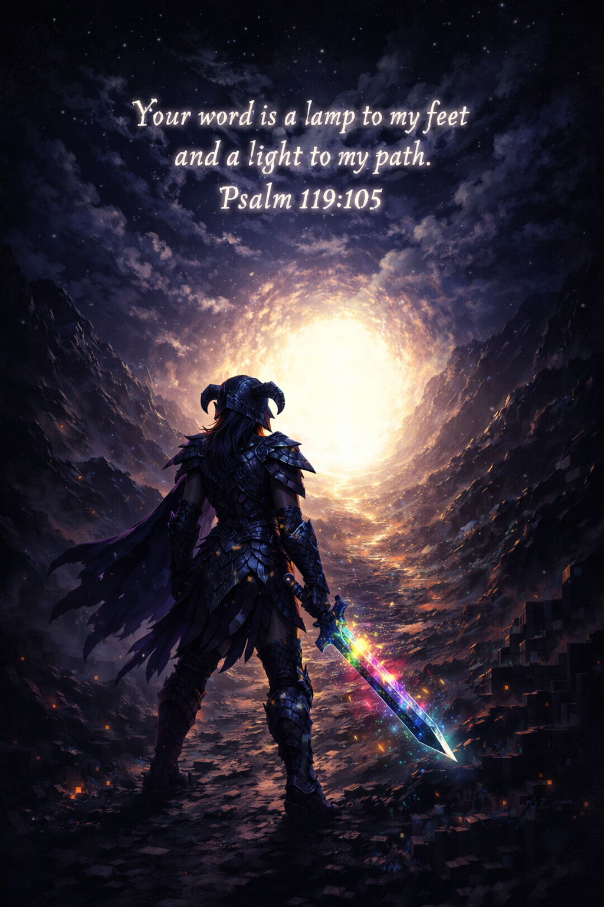
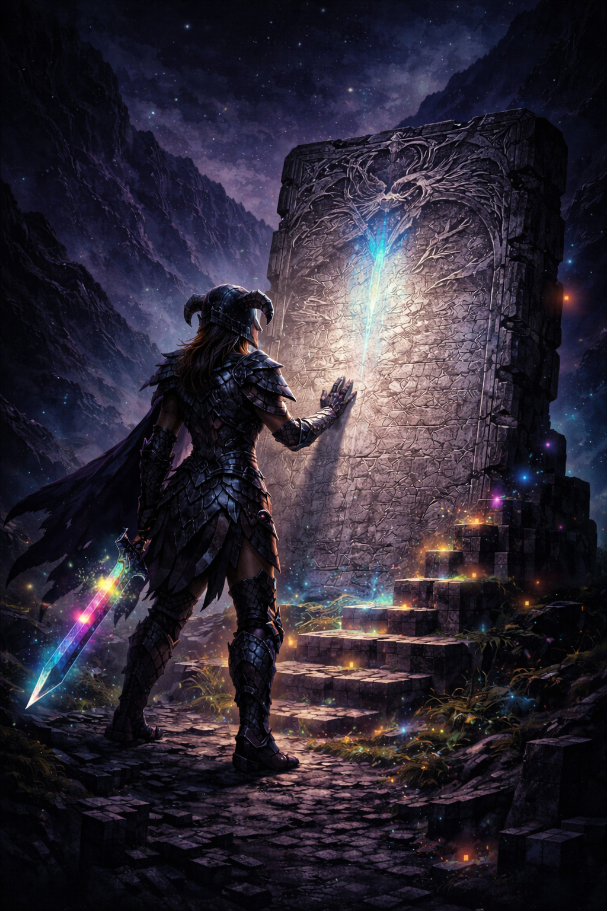

Dear Rayven,
Hi Rayven, I hope things have been going well in Nashville, Tennessee. I wanted to make this encouragement card for the Kingdom Date that we had, and I hope you truly enjoyed this virtual card that I created. I really hope this card is something you can look back on as you continue your walk with Christ. I’m praying that you continue to grow into the wonderful woman of God that you’re being molded into each and every day.
You remind me of my little sister, whom I’ve thought about bringing into the faith. Of the things we talked about, one thing that really stood out to me was the effort you’re putting into trying to help your friend become a disciple. I can relate to that, because I’ve had a few friends myself that I’ve been trying to invite to church and to events—some of whom have been wrestling with their faith—and I’ve been trying to help and guide them.
Despite the trials, despite the tribulations, and despite whatever may come, remember that God’s Word is a lamp for your feet and a light on your path.
“Your word is a lamp for my feet, a light on my path.”
- Psalm 119:105
I’ve been praying for your friend and the studies she’s in, that she becomes a disciple, and also praying that God continues to grow you and teach you things that you can use not only to strengthen your own faith, but the faith of those around you as well.
Sincerely,
Wisdom